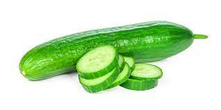

SALATALIKLI TARİFLER
Bu tarifler özellikle üşengeç insanlar için umarım atıştırmalık istediğinizde ama uğraşmak istemediğinizde işinize yarar!
Tuzlu Salatalık
Bu tarif elbette çok basit ve bir özelliği yok ama özelliğide bu.
Eğer bir şey yapmaya çok üşeniyorsanız ama tuzlu bir şey yemek istiyorsanız bunu kesinlikle öneririm.
Malzemeler
- Salatalık
- Tuz
Yapılışı
- Salatalığınızın isteğede bağlı olarak kabuklarını soyunuz ve ikiye bölünüz.
- Tuzu üzerine istediğiniz kadar serpiniz
- Salatalığınız hazır!
- Afiyet Olsun

OYULMUŞ SALATALIKTAN SANDVİÇ
Yanlış anlamadınız cidden oyulmuş salatalıktan sandviç yapabilirsiniz tabi orjinali gibi
olmayacak ve tad zevkinize bakar ama öneririm
Malzemeler
- Salatalık
- Salam
- Peynir
Yapılışı
- Öncelikle isteğe bağlı soyduğumuz salatalığımızın içini oymalıyız.
(Çok derin olmamasına dikkat edin ki delinmesin) - Salamlarınızı dilimleyin ve salatalığınızın oyulmuş kısmına koyun
- Peynirleri istediğiniz büyüklükte (Tercihen çok büyük degil) kesip onlarıda yerleştirin
- Afiyet Olsun!